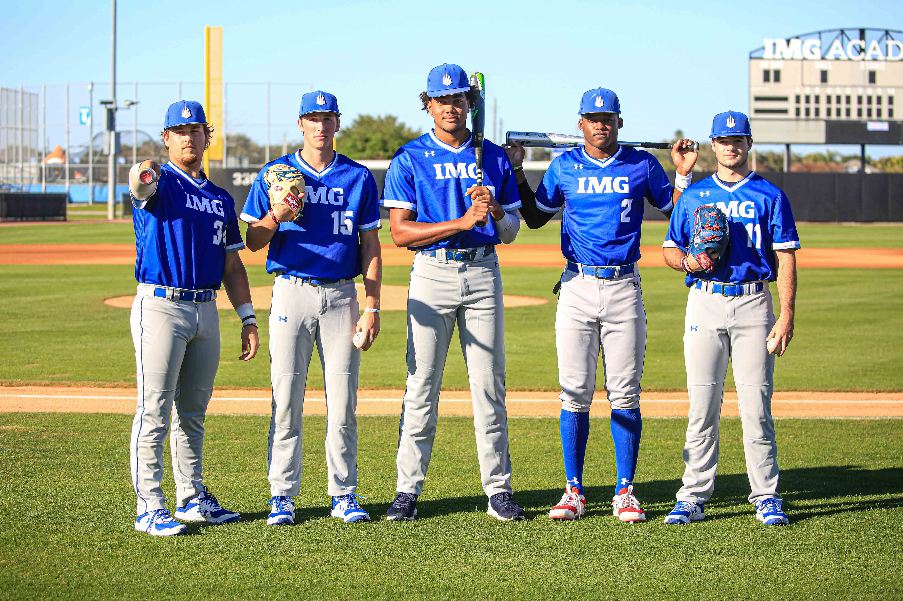
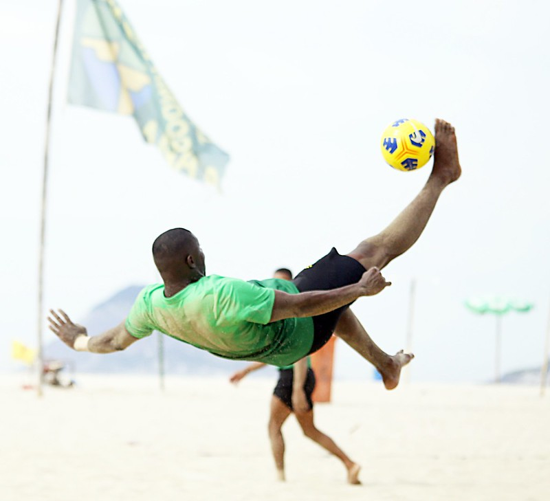
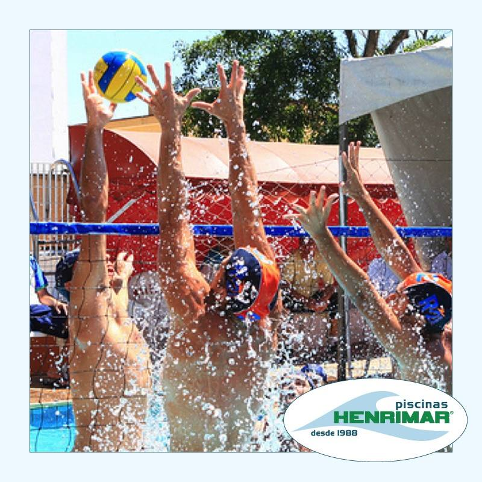
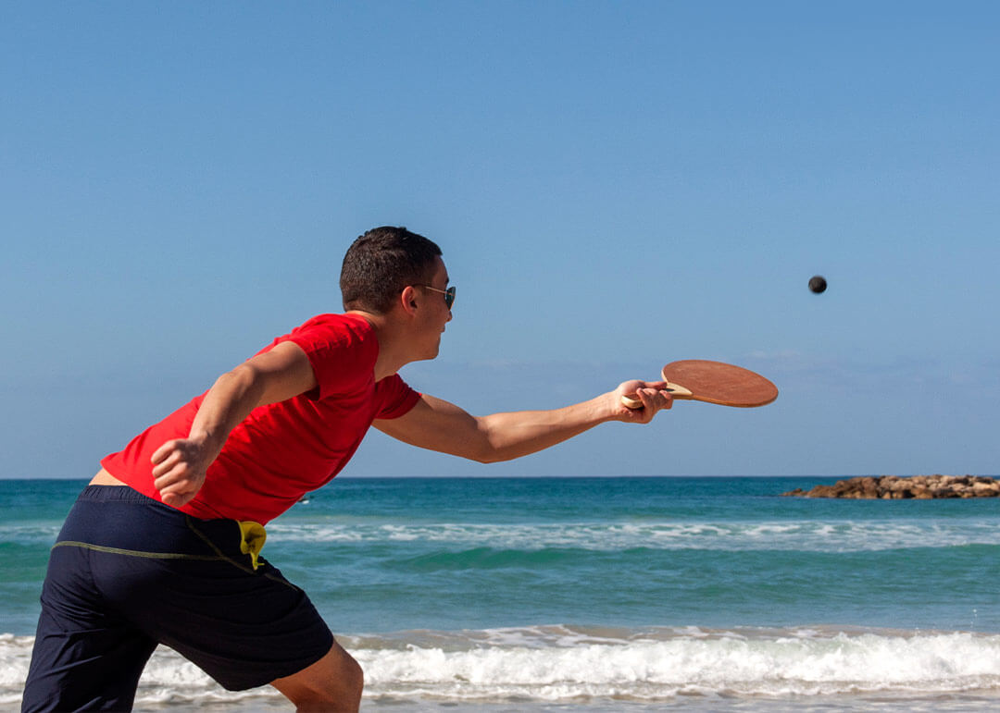

Tão antigos quanto o homem, os esportes são uma das invenções mais beneficentes do homem. Além de manter o corpo saudável, ainda auxiliam na criação de uma série de comportamentos positivos, como a humildade, a união, a empatia, dentre outros.
E os esportes com bola são, sem nenhuma dúvida, os mais populares. Mas se você sabe a diferença entre alguns deles? É justamente isso que iremos descobrir abaixo
| Esporte | Origem | Ambiente | Objetivo | Equipe | ||
|---|---|---|---|---|---|---|
| 1 |  | Baseball | EUA,1971 | Campo com 1/4 de circulo, de 92 a 108,2m de raio | Realizar o maior numero de corridas. | Nove jogadores em cada time. |
| 2 |  | Beach Soccer | 1930, Brasil | Quadra de areia com 30 ou 37 m x 26 ou 27 de largura | Realizar gols no campo adversário. | Cinco jogadores em cada time. |
| 3 |  | Biribol | 1968, Brasil | Piscina com 4 x 8 x 1,3m | Derrubar a bola na quadra adversária | 2 a 4 jogadores por time. |
| 4 |  | Frescobol | Brasil, 1946 | Ao ar livre | Manter a bola no ar pelo maior tempo possivel | geralmente um contra um. |
Saíba mais acessando o link